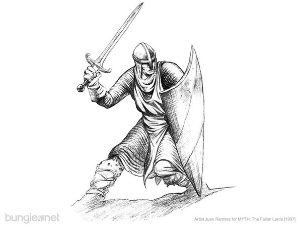
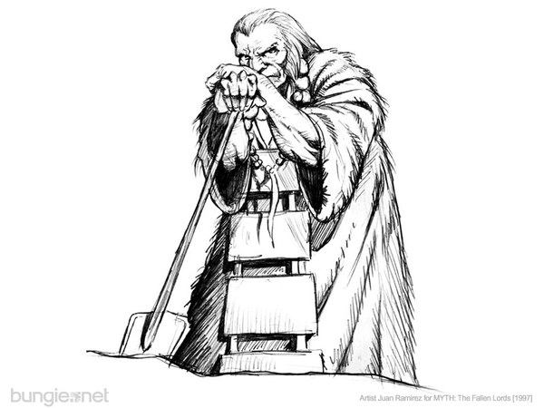
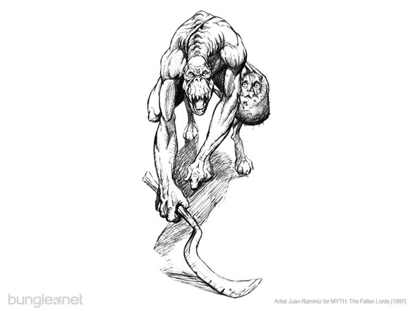
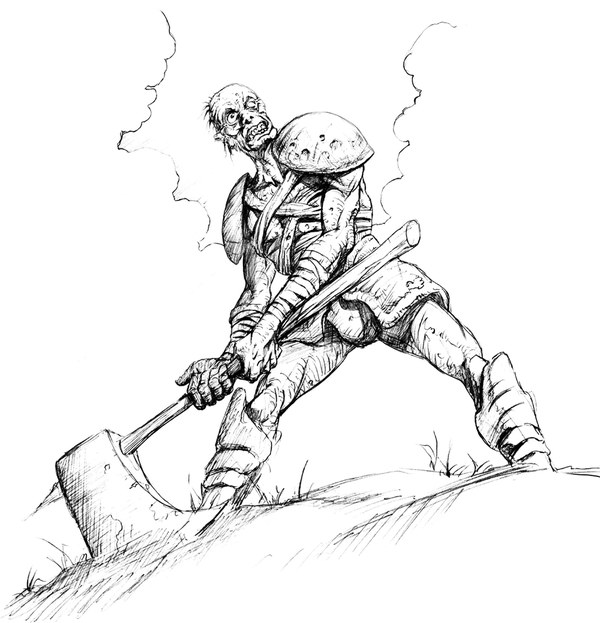
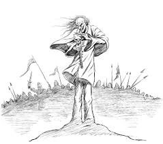
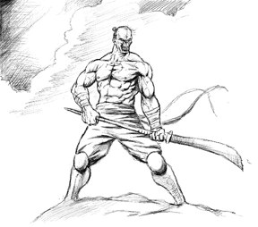

Before this tool could read a single map,
Before we found the deck, the arch, the gap,
You raised the banner for an old campaign:
To bring the Fallen Lords to march again.

Like scouts the Legion sends out far ahead,
You brought back word of where our maps had bled:
Where thrall stood dry, where bushes floated high,
Where dwarves on Crow's Bridge strolled across the sky.

When crashes struck like ghols out of the night,
You sent the log and helped us set it right;
Through moonwalking men and houses perched too tall,
You held the line, our one friend through it all.

So stay safe in the Keep, behind its walls,
Where no Myrkridian howls and no thrall crawls;
Let Soulblighter's crows and Shiver's biting frost
Break on your gates, and every siege be lost.

May the Deceiver's whispers find no door,
May Balor's shadow cross your land no more,
May dwarven satchels light the dark for you,
And every journeyman's warm hands hold you true.

We'll keep you, Keep, as long as Myth is played,
Through every level that this tool has made;
Together we will see the labour through,
And make the converter whole, thanks to you.
With thanks from Edward and Claude